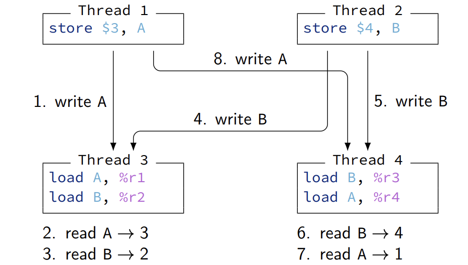

Mine of Information - Beginner’s Guide to Installing from Source
False Sharing
没有正确性问题，归根结底还是因为访问了不同的内存地址吧
int sum1;
int sum2;
void thread1(int v[], int v_count) {
sum1 = 0;
for (int i = 0; i < v_count; i++)
sum1 += v[i];
}
void thread2(int v[], int v_count) {
sum2 = 0;
for (int i = 0; i < v_count; i++)
sum2 += v[i];
}1.首先, thread1 将 sum1 读入其缓存。由于该行不存在于其他任何缓存中, thread1 处于独占状态:
2.thread2 现在读取 sum2 。由于 thread1 的缓存行已经在独占状态，这会导致 thread1 的缓存行降级，并且缓存行现在在两个缓存中都处于共享状态：
3.thread1 现在将其更新后的总和写入 sum1 。由于它只在共享状态下拥有该行，因此必须升级该行并在 thread2 的缓存中无效该行：
4.thread2 现在将其更新后的总和写入到 sum2 中。由于 thread1 已在其缓存中失效了该缓存行，因此发生了一致性缺失，并且必须在 thread1 的缓存中失效该行，从而迫使 thread1 执行一致性写回：
5.下一次循环迭代现在开始， thread1 再次读取 sum1 。由于 thread2 刚刚在 thread1 的缓存中失效了缓存行，它会遇到一致性缺失。它还必须在 thread2 的缓存中降级该行，迫使 thread2 执行一致性写回操作：
6.thread2 最终读取了 sum2 。由于它有共享状态的缓存行，因此可以无需一致性活动就进行读取，我们又回到了步骤 2 结束时的情况
3到6昂贵的升级、一致性缺失和一致性写回
Execution vs interpretation
deepseek生成
传统硬件执行：
经典的CPU通过硬连线路（Hardwired Logic）直接实现取指-解码-执行周期。每条指令的每个步骤（如加法、跳转）都由专用电路处理。这种方式高效但灵活性低，修改指令集需重新设计硬件。
通过微码解释器，硬件专注于高效执行μops，而非直接处理复杂指令。这使得设计更模块化，例如现代CPU可复用相同的ALU（算术逻辑单元）处理多种指令。
软件解释器：
通过软件（如微码，即Microcode）实现指令的解释。复杂指令被分解为更小的微操作（μops），这些μops由底层硬件执行。微码存储在CPU内部的固件中，充当“解释器”，将复杂指令翻译为硬件可直接执行的原子操作。
示例：
x86处理器的复杂指令（如字符串操作）会被微码分解为多个μops（如加载、计算、存储），硬件仅需实现这些基础操作。
向后兼容性：
微码允许通过更新固件（而非修改硬件）支持旧指令集。例如，新x86 CPU通过微码升级兼容几十年前的软件，无需重新设计电路。
-
历史背景（CISC架构）：
20世纪70-80年代，CISC（复杂指令集计算机，如x86）采用微码实现庞大指令集。指令集包含高度抽象的指令（如单条指令完成复杂操作），通过微码解释适配硬件，但牺牲了一定的效率。后来RISC（精简指令集）通过简化指令集和硬连线逻辑提高了性能，但现代CPU（如Intel/AMD）融合了两者：硬件直接执行常见指令，复杂指令仍依赖微码。 -
执行（硬连线）：高效但缺乏灵活性，适合固定指令集。
-
解释（微码）：灵活且简化硬件设计，支持复杂指令集和向后兼容。
cache可能会导致写放大
cpu是byte-addressable，而cacheline granularity更大

weak memory order
在strong中 8发生在5之后是不被允许的，观察到写的顺序得一致
锁需要维护状态16-40bytes
获取锁需要系统调用，耗时
coarse-grained locking
高争用下degrade
获取锁的延迟明显增加，即使是共享锁
乐观锁
试图优化读为大多数的情况
由于上述原因，共享锁没有用
• Associate a version with the shared resource
• Writers still have to acquire an exclusive lock of some sort
• This ensures that only one writer at a time has access to the resource
• At the end of its critical section, a writer atomically increases the version
• Readers only have to read the version
• At the begin of its critical section, a reader atomically reads the current version
• At the end of its critical section, a reader validates that the version did not change
• Otherwise, a concurrent write occurred and the critical section is restarted
writer(optLock) {
lockExclusive(optLock.mutex) // begin critical section
// modify the shared resource
storeAtomic(optLock.version, optLock.version + 1)
unlockExclusive(optLock.mutex) // end critical section
}
reader(optLock) {
while(true) { current = loadAtomic(optLock.version); // begin critical section
// read the shared resource
if (current == loadAtomic(optLock.version)) // validate
return; // end critical section
}
}读者只需要两个原子load，比共享锁便宜
但是注意，共享资源在我们访问时可能被修改，不能做出consistent state的假设
更复杂的读操作需要更多中间检查
non-blocking
不依赖锁的，使用原子操作
一般是lock-free的同义词，表示至少能有一个线程能make progress
lost update和A-B-A问题
CAS没有公平性，不保证某个线程最终能获得锁